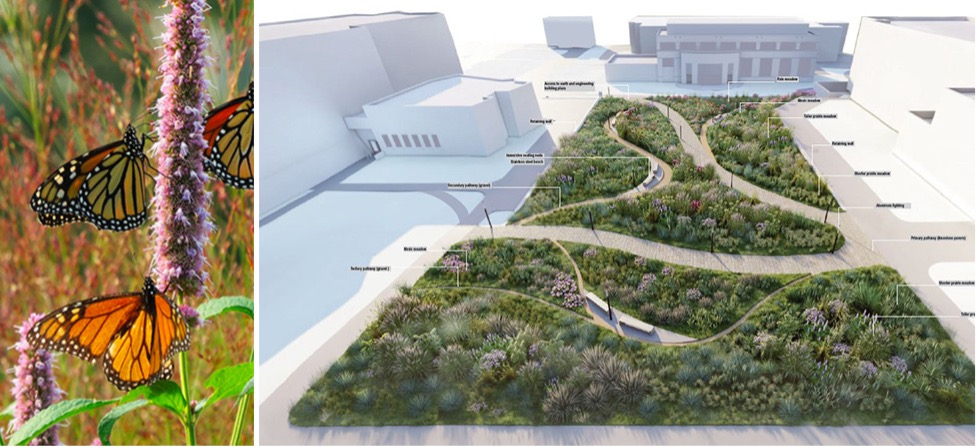

Larch 335/837: Ecology and Plants II (Fall 2026)

Syllabus
Course Information
Meeting Times
Tuesday and Thursday, 9:05 - 11:50 AM
Location(s)
144 Stuckeman Family Building
Outdoors: Millennium Science Complex
Faculty
Travis Flohr, Ph.D., tlf159@psu.edu, 419 SFB, office hours by appointment.
Instructor
Mohammad “Mo” Rezvan, mfr5731@psu.edu, Office hours and location by appointment.
Teaching Assistant
Paige Groton, peg5127@psu.edu, Office hours and location by appointment.
Undergraduate Assistant
Derek Pei, dqp5484@psu.edu), Office hours and location by appointment.
Credits
Larch 335: 3 credits Larch 837: 3 credits
Course Costs and Materials
We have tried to keep course costs to a minimum. Feel free to leverage your existing supplies (e.g., pens, pencils, erasers, and pencil sharpeners). Still, Table 1 is our best estimate of course costs based on past course experiences. You may use markers or pens other than those listed below; the key is being able to produce the work that is required of you. However, note that exact costs may vary depending on the extent of your plant lists when printing for review. You may use markers or pens than other from those listed below; the key is to quickly create conceptual drawings with three to four distinctly different line weights.
| Materials and Supplies | Total Costs |
|---|---|
| Materials and Supplies | |
| Field Journal | $25.00 |
| Fine liner Technical Pens or Sharpies | $15.00 |
| Graphite Pencil Set, with multiple (3+) hardness’s | $10.00 |
| Pencil Sharpener | $2.00 |
| 1 rol of 24” trace | $20.00 |
| Printing | |
| 11” x 17” (Tabloid) Black and White Plant Lists, 20 sheets (single-sided) * $0.17 | $3.40 |
| 24” x 26” (Arch D) Black and White Base Maps, 2 sheets (single-sided) * $18.00 | $36.00 |
| Total Costs | $111.40 |
** Disclaimer. Prices are as accurate as those provided in the summer of Published in 2026.
Please feel free to express yourself artistically with supplies other than those listed above.
Software
Although Larch 335/837 will emphasize integrating a wide array of software tools to represent the design and implementation process, the base information and construction drawings will be created using AutoCAD. Implementing landscape projects requires creating planting contract documents with symbols, labels, notes, details, and plant schedules. In addition to developing your digital drafting skills, you will use AutoCAD to manage sheet sets, generate plant schedules from dynamic block attributes, link to external spreadsheets, and embed external objects.
However, effective visual thinking and communication are essential to any design and implementation process, especially planting design and implementation. As you learn and apply planting design principles and techniques, you will also learn and apply various visualization and representation techniques. In addition to freehand sketching and rendering, you may use SketchUp or Rhino to create three-dimensional models to explore compositional possibilities and plant-landscape-people relationships. For more detailed studies, you may create photorealistic montages in Photoshop or photorealistic renderings using Twinmotion or Lumion, to name a few. We also support analog techniques (e.g., watercolor, markers) to recognize the diversity of traditions and objectives in design representation. Regardless of the technology or technique you choose, we expect your design representation to meet the assignment requirements and be of high quality. Please note that all the software used in this course is free to download on your personal computers or in one of the computer labs in the Stuckeman Family Building.
Personal Technology
This course requires extensive computer work that sometimes builds on previous projects throughout the semester. Lost data due to hard drive crashes, accidental deletions, corruption, etc., is bound to happen; however, the student must ensure they have backup copies of their work. Students should use their existing external hard drive or flash drive when working on personal, lab, or loaner computers, and maintain a working and a backup copy of all files when working on university-owned machines via remote access. We will cover strategies for backing up your data on the first day of class. We recommend backing up your data at least once per week.
If you already have an external hard drive or USB flash drive, feel free to continue using it as long as you have enough free space for it to work. We recommend purchasing at least a 1 TB Drive with a USB 3 connection if you need a hard drive. Your drive must be formatted for Windows. If you have questions regarding these requirements, please ask. Your previous drives from Larch 216/816 should be sufficient.
Course Description and Objectives
Larch 335/837 Planting Methods is part of the core professional sequence of our accredited BLA and MLA programs. As a methods course, it complements the design studio sequence by providing an applied focus on plants and the implementation of plantings in designed landscapes. It also serves as a setting to apply knowledge gained during Larch 145 and 245 (Ecology & Plants I and II), Larch 246 (Ridge & Valley), and other ‘planterly’ content in your prior design studios. Of course, we expect that Larch 335 (BLAs) and 837 (MLAs) will inform your design studio work this semester and in the following ones.
Knowledge of plants and plant culture and skill in planting design and implementation are critical aspects of the landscape architect’s education. Why? Because plants immensely contribute to sustaining and enhancing life in all forms. Well-selected, located, and managed landscape plants perform 1. As landscape architects, we have the responsibility and privilege of helping to place these benefits in motion.
This course aims to develop your appreciation of plants in the landscape while advancing knowledge and skills in applied planting techniques, documentation, and management protocols as distinct yet integral components of the landscape design and stewardship process. In terms of outcomes, by the end of the semester, you will have:
- gained experience in the horticulture and ‘ecoculture’ of established and emerging planting genres—the mixed pollinator garden, treed urban plaza, meadow, and hydric habitats, and other planted landscape contexts;
- built technical abilities in species selection, planting establishment and soil improvement methods, planting installation details, and adaptive management of the planted landscape;
- gained fluency in contract documentation (CD) that accurately and clearly communicates project intents and standards to contractors and managers;
- bolstered your understanding of progressive planting design theory that addresses aesthetic, ecological, cultural, and functional factors;
- became aware of some of the performative aspects of planted landscapes in contributing to local-scale sustainability and resilience;
- considered diversity, equity, inclusion, and belonging (DEIB) aspects of planting design and planterly built works; and
- continued to develop your skills in AutoCAD and related digital media for conceptualization, visualization, and contractor instructions
Planterly, Cultural, and Professional Diversity
There’s a growing body of scholarship that modern students are learning less and less about plants and plant communities, which are the foundation of sustainable human societies and a big part of what we envision when we think of the beauty of the natural world (Wandersee & Schussler, 1999). We hope this course plays a role in ensuring the next generation of landscape architects are nature literate and that our profession helps reverse broader societal trends toward plant blindness and biodiversity collapse (Brzuszek et al., 2011; Griswold, 1994; Sturtevant, 1927; Weller, 2014).
The gardenesque, culinary, and medicinal uses of plants have underpinned many distinct cultures and traditions across diverse societies, not just amongst privileged classes of European background. We hope this course provides an opportunity to explore the close links between horticulture and human culture, particularly in underappreciated black and brown communities. George Washington Carver (c. 1864-1943) was one of the most prominent botanists of the early 20th century, having discovered hundreds of uses for native and introduced plants across the U.S. David Augustus Williston (1868-1962) was an esteemed landscape architect and horticulturist on many important U.S. campus design projects. More recently, many minority-led design firms have been pushing the boundaries of planting design and methods in contemporary landscape architecture. We think of the outstanding work on the Highline plantings by Isabel Castilla of James Corner Field Operations; the many culturally-attuned and inclusive landscapes by Walter Hood and company; José Almiñana’s work with Andropogon on Phipps Conservatory’s Center for Sustainability, and the award-winning projects of New York-based garden designer, Wambui Ippolito. The list could go on. Throughout the semester, let’s look for opportunities to embrace human and professional diversity associated with planting design and methods.
We should scrutinize botanical terminology with negative connotations to support our College’s diversity, equity, and inclusion (DEI) policies. Let’s begin by embracing Penn State Arboretum’s position on the issue:
“Derogatory Terminology in Common Names and Taxonomy: The fields of botany and horticulture [and landscape architecture] have not been immune to the biases and prejudices of the larger culture. This sad and frustrating fact becomes immediately evident when we are confronted with blatantly racist or pejorative common names for plants. Such pejorative terminology is inconsistent with Penn State’s values, as well as with the professional standards of the public horticulture field. The Arboretum at Penn State [and us in Larch 335/837] will not knowingly use or promote derogatory, biased, or racist common names in any of its publications or educational materials (citation unknown).”
Course Outcomes
Upon completion of Larch 335/837, you should be able to:
- conduct site and local context analyses that inform planting design and implementation;
- conduct independent technical research and integrate it within the larger scope of a planting strategy;
- develop planting concepts based on given goals and programs that interweave social, aesthetic, ecological, and utilitarian objectives;
- apply an integrated approach to using hand drawing, AutoCAD, SketchUP, or Rhino, and Twinmotion or Lumion visualization software to communicate planting approaches and plant choices effectively;
- develop woody and herbaceous plant palettes and follow-up technical CAD plant schedules;
- prepare detailed and accurate technical CAD planting and seeding plans, as well as associated site layout plans that meet performative standards for sustainable landscapes;
- prepare progressive technical planting details;
- craft instructions to the Contractor regarding site preparation, soil remediation and enhancement, plant procurement, planting, seeding, and landscape management during the plant establishment period, and;
- generate technically thorough, well-organized, and succinct CAD contract documents.
Although the final design and planting implementation are exacting and technical, your projects will maintain a commitment to the site’s overall goals and solid design (aesthetic, ecological, inclusive social, and functional) principles and performance standards throughout the process.
Course Structure
Learning theory strongly advises blending several approaches to build knowledge. As such we will interweave multiple learning formats: site visits, lectures, demonstrations, workshops, pin-ups, and one-on-one desk critiques.
Evaluation and Grade Allocation
This course has a total of four main modules with two modules having sub modules, details are provided below Table 2. Details for each graded deliverable will be provided within individual deliverable statements.
Larch 335/837
| Module | Value |
|---|---|
| Module 1: Site Analyses | 10 points |
| Module 2: Pollinator Garden | |
| 2a. Pollinator Garden Plant List/Design Check-off | 15 points |
| 2b. Pollinator Garden Technical Planting Plan/Schedule | 30 points |
| Module 3. Technical Treed Plaza Plan and Details | 60 points |
| Module 4. Planted Meadow Ecosystems | |
| 4a. Meadow Concept and Palette | 30 points |
| 4b. Technical Meadow Plan, Schedules, and Establishment Notes | 30 points |
| Engagement - steady participation, progress, attendance, and preparation | 10 points |
| Total | 185 points |
Larch 837 Enrichment
We expect graduate students to participate in 800-level courses and engage with the content. Graduate course content will include advanced-level exploration of the technical content covered in Modules 2 and 4. The specific deliverable will be a cost estimate spreadsheet and an associated design and cost presentation to the undergraduate class. Each cost estimate and presentation will be worth 10 points, making Larch 837 worth 205 points.
Grading Rubric and Scale
Grades will be based on the quality, accuracy, completeness, and timeliness of your work; the strength of your progress; and your consistent, productive engagement, both individually and during group activities. If you are concerned about where you stand during the semester, please talk with me. Table 3 outlines the overall grading rubric to be used in this course; additional rubrics are provided in the problem statements. Note, this course will follow standard mathmatical rounding, e.g., a 92.5 will be rounded to a 93; however, a 92.1 will not be rounded.
| Qualitative Level Achieved. | Letter Grade | % Range |
|---|---|---|
| Excellent, inspired, brilliant quality, highly accurate, fully complete, faultless. | A | 93-100 |
| Between excellent and very good, quite inspired, complete, nearly faultless. | A- | 90-92.9 |
| Very good; shows some inspiration or is special in some way but is not brilliant and/or faultless. | B+ | 87-89.9 |
| Good, solid, and complete, but with no particular inspiration and/or special qualities. | B | 83-86.9 |
| Adequate; a few notable weaknesses and/or gaps. | B- | 80-82.9 |
| Basics are present but have a series of notable weaknesses and/or gaps. | C+ | 77-79.9 |
| Not all the basics present; substantial errors; consistently weak and/or uninspired. | C | 70-76.9 |
| Barely acceptable; major gaps, weaknesses, and/or elements missing. | D | 60-69.9 |
| Unacceptable; missed the point; substantially incomplete. | F | <60 |
Course Policies
AI/Generative Technology Policy
This course does not permit AI/Generative technologies (GT), such as ChatGPT, Midjourney, Adobe Firefly, Dall-E, or others. If you have questions, discuss them with us before you begin and before submitting the final work. The reason for this policy is that I have tried all these AI applications, and none currently provide robust, accurate plant information. I attempted a few of the projects with AI, and the best they earned was a D. Thus, the use of AI/GT is plagiarism in this course (see plagiarism policy). Additionally, emerging research shows that using AI inhibits deeply learning initial concepts and the development of early critical thinking skills. Skills necessary to ensure AI is producing reliable and truthful outputs. However, you may use a spelling or grammar check AI such as Grammarly.
You are not permitted to upload this course’s syllabus, quizzes, lectures, or assignment statements to any AI or Generative technology, unless course accommodations necessitate doing so. Doing so will be considered an academic infraction and theft of academic intellectual property.
Departmental, School, and University Policies
All departmental and school studio/building policies are in effect.
Communication Policy
Our official mode of communication in this class is through Canvas. Course-wide communication will be via Course Announcements. Personal communication between the teaching, and students will be via Canvas Inbox. All communication shall be respectful and professional. It is the student’s responsibility to check Canvas frequently. All technology troubleshooting questions should be directed to the appropriate Canvas Discussion Board. The teaching team will moderate discussion board posts and involve the faculty as needed.
Before each field class, I will monitor the weather closely using local weather reports. Field classes will be held during good weather and when light rain is forecasted. Dress accordingly! If the weather is predicted to be stormy and consistently wet during class time, I will post a Canvas announcement to the whole class to opt for “Plan B,” either to meet on Zoom or in our classroom space. The announcement may be sent the evening before or right up to about noon on the day of class. WATCH FOR MY CANVAS ANNOUNCEMENTS!.
Weather-based Class Delays and Cancellation Policy
For university-related early dismissals or cancellations, please refer to http://news.psu.edu/story/333863/2014/11/10/campus-life/when-winter-weather-strikes-resources-university-park-community. For course-specific changes in scheduling or meeting requirements, see the “Bad Weather” information provided above.
Submission Policy
All projects and exercises must be submitted by the deadlines indicated in the course schedule. Incomplete assignments should be submitted by the deadline and will be graded as is. Students seeking an exception due to extenuating circumstances should message the faculty via Canvas before the deadline. Late submissions are strongly discouraged. A deduction of one full letter grade (e.g., B+ to C+) will be applied for each of the first two 24-hour periods of unexcused lateness beyond the deadline. Submissions will not be accepted beyond 48 hours after the deadline and will receive 0 points (0%).
Engagement and Attendance Policy
As a core part of the professional curriculum, attendance is mandatory and will be recorded. If we have any Zoom lectures, they will be no different from face-to-face lectures in that we expect your timely attendance. Class time (face-to-face or virtual) is intended to achieve the progress necessary to complete this course successfully. Since we have just two weekly classes, we expect your engaged and productive presence for the entire class period.
If you cannot attend due to extenuating circumstances, you must provide the instructors with prior notification and the appropriate reasons. If you have any cold, flu, or COVID-19-like symptoms, please stay home and/or isolate as appropriate. It is the student’s responsibility to communicate via Canvas with faculty regarding absences and to make up missing work within the unexcused late period noted below.
Inconsistent attendance, repeated lateness to class, or lack of progress and engagement during class may reduce the work grade for that assignment. Also, a pattern of unexcused absence or tardiness may result in a reduction in your grade. Note that we consider a student’s inattentive presence during a lecture disengaged and, thus, effectively absent.
Finally, university-level class attendance policies apply. For more information, see: https://undergrad.psu.edu/aappm/42-00-class-attendance.html.
If you cannot attend due to illness or extenuating circumstances, Canvas message the teaching team promptly. If you are seriously ill, notify the teaching team as soon as possible or ask a friend to do so on your behalf. If you miss a Plant Walk, we expect you’ll catch up on your own by visiting the site and finding/studying the designated plants for that session so that you’re prepared to take the associated quiz at the same time as your peers. If you must miss class due to activities in another class (e.g., a field trip), you must inform the instructional team promptly, well before class. Specifically, beyond two (2) unexcused absences, the student may receive a 2% reduction in an assignment grade for each subsequent unexcused absence. More generally, inconsistent attendance, a record of lateness, or a pattern of lack of progress or engagement during class or fieldwork may result in a significant grade reduction.
Academic Integrity and Misconduct
We urge you to promise not to cheat on quizzes or plagiarize during the semester. Why? Because the only true road to professional and personal success is to be honest and embrace academic and personal integrity. When you learn honestly, you learn the material properly, and you feel good about yourself as a human being. Evidence of cheating on a quiz or plagiarism on an assignment will result in a zero (0%) grade for the assignment in question, an additional final course grade reduction, and possibly, depending on severity, course failure and academic sanction. If you have any doubts or questions about what constitutes cheating or academic misconduct, please do not hesitate to talk with the teaching team.
We will adhere to all academic integrity policies in this course. According to the University, academic integrity “is the pursuit of scholarly activity in an open, honest, and responsible manner (Penn State University, 2024).” Dishonesty and plagiarism are wrong and will result in academic sanctions. We will abide by university policy. For more information, see https://bulletins.psu.edu/undergraduate/general-information/academic-information/student-rights-responsibilities/academic-integrity/. If you plagiarize any portion of an assignment, you will receive 0 points (0%) for the assignment. When in doubt, seek advice from the course teaching team.
Inclusivity, Justice, Collaboration, and Accommodations
In the spirit of shared humanity and concern for our community and world, we recognize that our learning activities and design solutions can either support or disadvantage groups of people and individuals. We value critical reasoning, self-reflection, imagination, empathy, inclusivity, and collaboration. We disavow racism and all other systemic patterns of prejudice, including speech or actions that attempt to silence, threaten, degrade, disadvantage, or displace groups and individuals. We advocate for social and environmental justice and inclusive communities and places as we work toward an equitable, democratic, and sustainable society. As future landscape architects, you have the opportunity and responsibility to create and define civic spaces and landscapes that are welcoming to all people and address plant-related societal issues (e.g., ecosystem service equity and biodiversity collapse). We will support and enforce all nondiscrimination and harassment policies. For more information, see https://guru.psu.edu/policies/AD85.html.
Educational Equity
Consistent with University Policy AD29, students who believe they have experienced or observed a hate crime, an act of intolerance, discrimination, or harassment that occurs at Penn State are urged to report these incidents. Refer to http://equity.psu.edu/reportbias/.
Indigenous Lands Statement
As landscape stewards and advocates for both restorative justice and the environment, we acknowledge that the Stuckeman School rests on the ancestral lands of the Erie, Haudenosaunee, Lenape, Shawnee, Susquehannock, and Wahzhazhe Nations. As a land grant institution, we acknowledge and honor the traditional caretakers of these lands and strive to understand and model their responsible stewardship. We also acknowledge the longer history of these lands and our place in that history. Penn State’s land grant was funded by selling land taken from 112 tribal nations in 50 land cessions across 16 states. This injustice has yet to be openly acknowledged by Penn State, much less reconciled.
Penn State Values and Student Code of Conduct
We expect all students to conduct themselves in accordance with the University’s Code of Conduct. For details, see https://studentaffairs.psu.edu/support-safety-conduct/student-conduct/code-conduct. Please follow the core Penn State values of Integrity, Respect, Responsibility, Discovery, Excellence, and Community.
Support
Counseling & Psychological Services Resources
Counseling and psychological service resources are available to all students. If you need support, be sure to use these resources. For more information, see http://studentaffairs.psu.edu/counseling/.
Accommodations
Students with disabilities are welcomed into Penn State and SALA educational programs. If you need modifications or reasonable accommodations in this course due to a disability, contact the Office for Disability Services (ODS) and inform the course faculty. ODS is located at 116 Boucke Building. For more information, see https://equity.psu.edu/offices/student-disability-resources. Please provide accommodation requests and documentation to the course faculty at the beginning of the course so we can best support you.
Changes and Updates
The syllabus, schedule, project statements, lectures, and supporting materials are subject to change and are copyrighted. Faculty will promptly communicate revisions verbally and via Canvas announcements.
References
Brzuszek, R. F., Harkess, R. L., & Stortz, E. (2011). Perceptions of the Importance of Plant Material Knowledge by Practicing Landscape Architects in the Southeastern United States. HortTechnology, 21(1), 126–130. https://doi.org/10.21273/HORTTECH.21.1.126
Griswold, M. (1994). The Horticultural Reconnection. Landscape Architecture Magazine, 84(5), 46–48, 50, 52.
Landscape Architecture Foundation. (2024). About Landscape Performance | Landscape Performance Series. https://www.landscapeperformance.org/about-landscape-performance
Penn State University. (2024). Academic Integrity | Penn State. Undergraduate Bulletin. https://bulletins.psu.edu/undergraduate/general-information/academic-information/student-rights-responsibilities/academic-integrity/
Sturtevant, R. S. (1927). Planting design—Its study and teaching. Landscape Architecture Magazine, 18(1), 52–59.
Wandersee, J. H., & Schussler, E. E. (1999). Preventing Plant Blindness. The American Biology Teacher, 61(2), 82–86. https://doi.org/10.2307/4450624
Weller, R. (2014). Stewardship now? Reflections on landscape architecture’s Raison d’etre in the 21st century. Landscape Journal, 33(2), 85–108.
Landscape performance is “a measure of the effectiveness with which landscape solutions fulfill their intended purpose and contribute to sustainability. It involves assessment of progress toward environmental, social, and economic goals based on measurable outcomes (Landscape Architecture Foundation, 2024).”↩︎